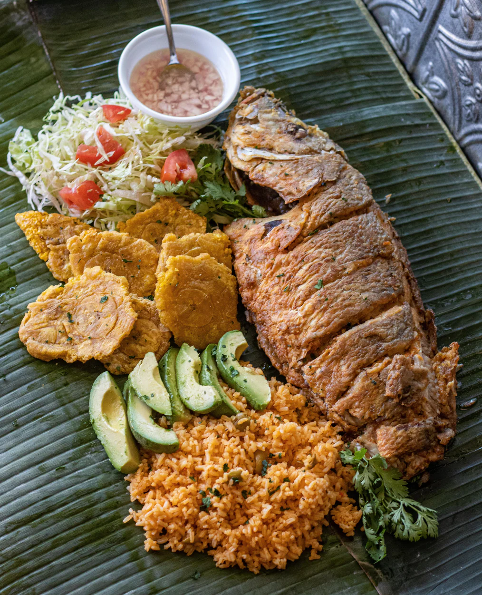

Carribean Fried Red Snapper

Caribbean Fried Red Snapper is a vibrant and flavorful dish where whole red snapper is seasoned with a blend of Caribbean spices and fried until crispy. To make it, start by cleaning and scaling the red snapper, then season it generously with a mixture of garlic, thyme, paprika, and salt. Heat oil in a pan and dredge the fish in flour before frying until golden brown and crispy on both sides. Serve with a squeeze of lime and a side of fresh salsa or a tangy salad. This dish captures the essence of Caribbean cuisine with its bold flavors and crispy texture.
- Whole red snapper (1-2 pounds, cleaned and scaled)
- Garlic cloves (3, minced)
- Fresh thyme (2 tablespoons, chopped or 1 teaspoon dried)
- Paprika (1 tablespoon)
- Salt (1-2 teaspoons, to taste)
- Black pepper (1 teaspoon, freshly ground)
- All-purpose flour (1 cup, for dredging)
- Vegetable oil (for frying, about 1-2 cups, depending on the pan size)
- Lime (1, cut into wedges for serving)
How the hell do we cook this thing?!
- Clean and scale the whole red snapper, then pat dry with paper towels.
- In a small bowl, mix minced garlic, chopped thyme, paprika, salt, and black pepper to create a seasoning blend.
- Rub the seasoning mixture all over the fish, making sure to get some inside the cavity and score the flesh lightly with a knife.
- Place flour in a shallow dish and dredge the seasoned fish on both sides until well-coated.
- Heat vegetable oil in a large frying pan over medium-high heat until hot (about 350°F or 175°C).
- Carefully place the dredged fish into the hot oil and fry for 4-6 minutes per side, or until the fish is golden brown and crispy. Ensure the fish is cooked through and flakes easily with a fork.
- Remove the fish from the pan and drain on paper towels to remove excess oil.
- Serve the fried red snapper hot, with lime wedges on the side for squeezing over the fish.